|
Material Interfaces |

  
|
|
Material Interfaces |
|
At a material interface, Maxwell’s equations require that the tangential components of  and 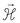 and the normal components of 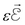 and 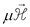 must be continuous.
and 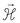 and the normal components of 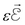 and 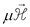 must be continuous.
The tangential continuity of components 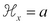 and 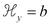 is automatically satisfied, because FlexPDE stores only a single value of variables at the interface. Continuity of 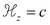, which is always tangential, requires, using (3.12), 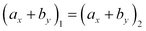. Continuity of  requires 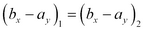.
requires 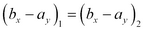.
Now consider the integrals (3.15) to be taken over each material independently. Each specifies in a general sense the “flux” of some quantity outward from the region. The sum of the two integrands, taking into account the reversed sign of the outward normal, specifies the conservation of the “flux”. In the usual case, the sum is zero, representing “flux” conservation. In our case, we must specify a jump in the flux in order to satisfy the requirements of Maxwell’s equations.
For the 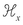 component equation we have, using the outward normals from region 1,
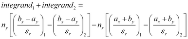
But the continuity requirements above dictate that the numerators be continuous, so the internal natural boundary condition becomes
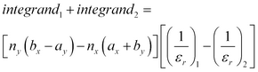
By a similar argument, the internal natural boundary condition for the 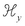 component equation is
Clearly, at an internal interface where 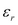 is continuous, the internal natural boundary condition reduces to zero, which is the default condition.
In the example which follows, we consider a simple 2x1 metal box with dielectric material in the left half. Note that FlexPDE will compute the eigenvalues with lowest magnitude, regardless of sign, while negative eigenvalues correspond to modes with propagation constants below cutoff, and are therefore not physically realizable.
See also "Samples | Usage | Eigenvalues | Filledguide.pde"
Descriptor 3.2 Filledguide.pde
title "Filled Waveguide"
select
modes = 8 { This is the number of Eigenvalues desired. }
variables
Hx,Hy
definitions
cm = 0.01 ! conversion from cm to meters
b = 1*cm ! box height
L = 2*b ! box width
epsr
epsr1=1 epsr2=1.5
ejump = 1/epsr2-1/epsr1 ! the boundary jump parameter
eps0 = 8.85e-12
mu0 = 4e-7*pi
c = 1/sqrt(mu0*eps0) ! light speed
k0b = 4
k0 = k0b/b
k02 = k0^2 ! k0^2=omega^2*mu0*eps0
curlh = dx(Hy)-dy(Hx) ! terms used in equations and BC’s
divh = dx(Hx)+dy(Hy)
equations
Hx: dx(divh)/epsr - dy(curlh/epsr) + k02*Hx - lambda*Hx/epsr = 0
Hy: dx(curlh/epsr) + dy(divh)/epsr + k02*Hy - lambda*Hy/epsr = 0
boundaries
region 1 epsr=epsr1
start(0,0)
natural(Hx) = 0 value(Hy)=0
line to (L,0)
value(Hx) = 0 value(Hy)=0 natural(Hy)=0
line to (L,b)
natural(Hx) = 0 value(Hy)=0
line to (0,b)
value(Hx) = 0 natural(Hy)=0
line to close
region 2 epsr=epsr2
start(b,b)
line to (0,b) to (0,0) to (b,0)
natural(Hx) = normal(-ejump*divh,ejump*curlh)
natural(Hy) = normal(-ejump*curlh,-ejump*divh)
line to close
monitors
contour(Hx) range=(-3,3)
contour(Hy) range=(-3,3)
plots
contour(Hx) range=(-3,3) report(k0b)
report(sqrt(abs(lambda))/k0)
surface(Hx) range=(-3,3) report(k0b)
report(sqrt(abs(lambda))/k0)
contour(Hy) range=(-3,3) report(k0b)
report(sqrt(abs(lambda))/k0)
surface(Hy) range=(-3,3) report(k0b)
report(sqrt(abs(lambda))/k0)
summary export
report(k0b)
report lambda
report(sqrt(abs(lambda))/k0)
end
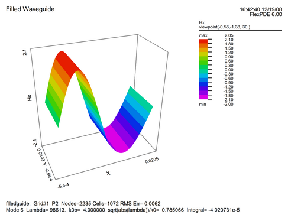
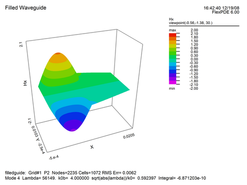
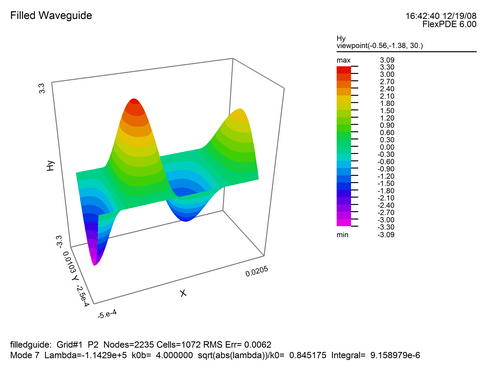
Page url: index.html?material_interfaces.html